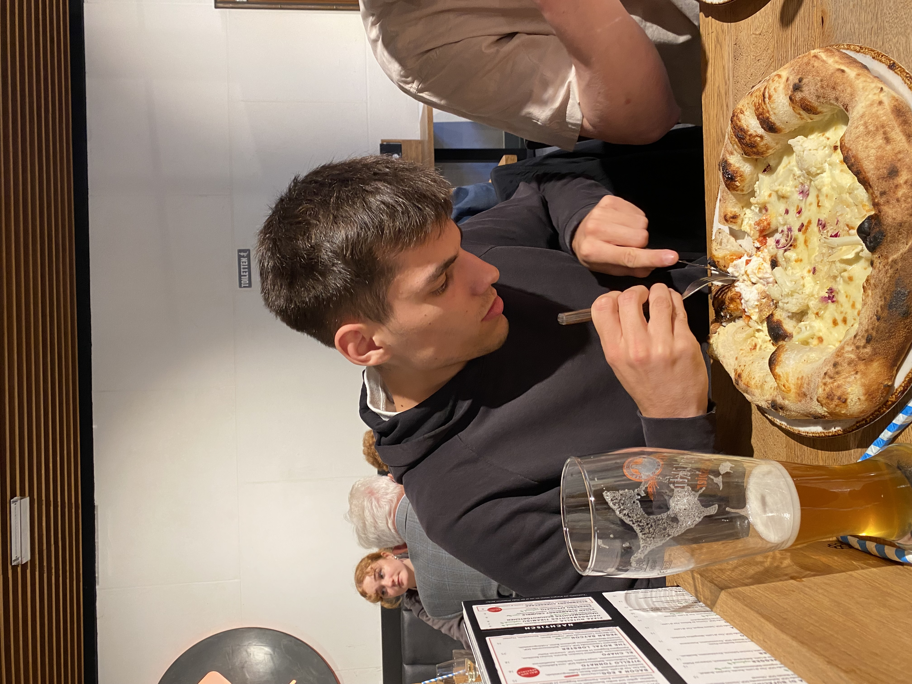
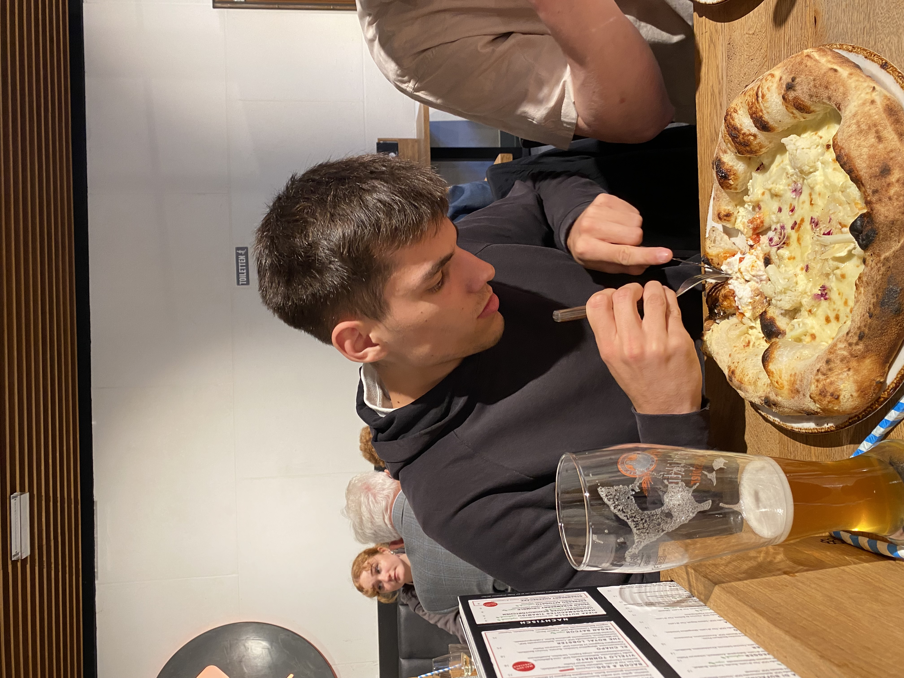

About Me
Hi, I’m Kai 👋 — a curious data scientist with an engineer’s mindset and a storyteller’s heart. I love diving into messy datasets, uncovering hidden patterns, and building solutions that bridge the gap between people and technology. Beyond the numbers, I’m passionate about creativity, personal growth, and making a real impact in the world.
📠Education
I’m currently wrapping up my Master’s in Data Science at the University of Mannheim, with an exciting exchange semester at the University of Adelaide. My background in Industrial Engineering (KIT) taught me how to think both systematically and creatively when solving data challenges.
💼 Experience
My professional journey includes hands-on work with ICIS and Fraunhofer SIT. From building real-time machine learning models to crafting data pipelines, I’ve worked on projects that blend innovation with real business impact.
🔬 Research Interests
I’m especially fascinated by the intersection of machine learning and traditional statistics. One of my main research fields is time series analysis and forecasting, but I’ve also enjoyed research projects in other domains, such as financial fraud detection, explainable AI or computer vision.
🌠Hobbies & Personal Life
 Hiking & Travel
Hiking & Travel
 Cooking
Cooking
 Sports
Sports
 Wine
Wine


 
